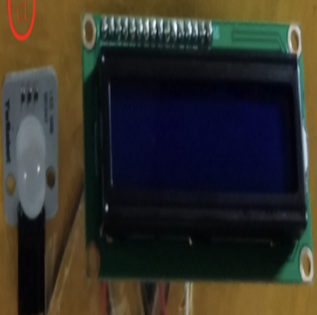
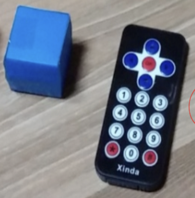
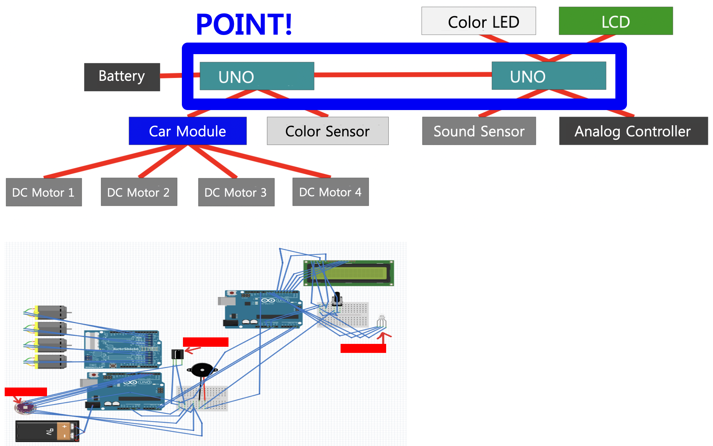
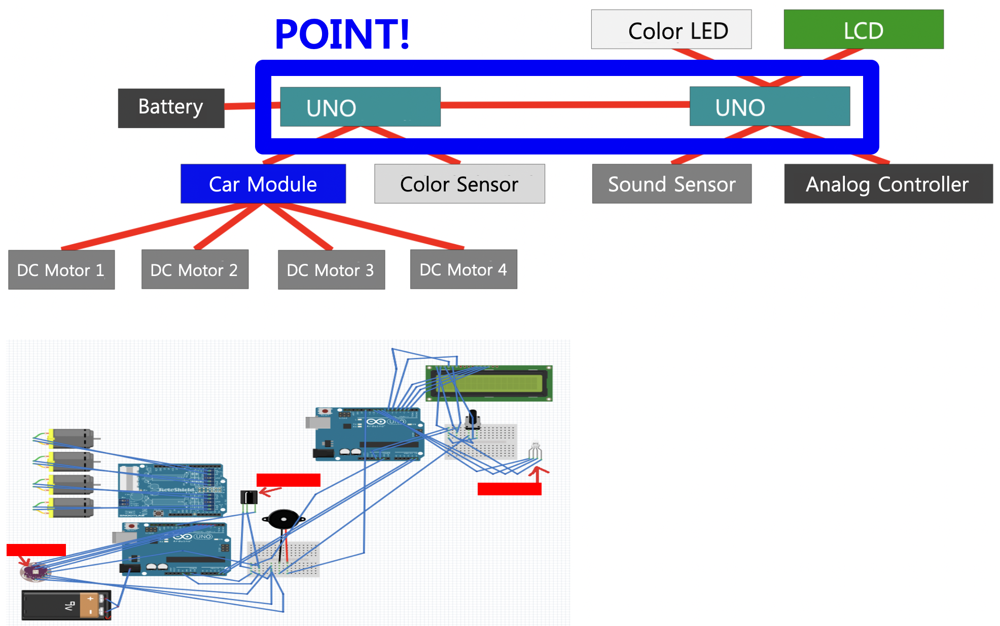

Implemented Functions

|
A function to Recognize Boxes When you place the box on the sensor, it recognizes the color. |
|  |
A function to Print Recognized Information When the box is brought to the sensor, the recognized information is output on the screen. |
|  |
A function to Control a Cart The directional buttons on the remote control the cart. |
Background and Purpose
In an introductory computer system class, there was a task to make a work with Arduino. It was created to make the most creative work possible.
In an introductory computer system class, there was a task to make a work with Arduino. It was created to make the most creative work possible.
What I Learned
- I learned how to use RGB LEDs, color recognition sensors, and automotive modules.
Process
- I only implemented a model of a toy mini cart using boxes, tape, and paints before programming the Arduino.
- I purchased all the parts necessary for the project, and I found an example using those parts on Google and executed it.
- I modified example programs appropriately investigated so far, and merged them into one.
- In this way, I was able to implement the program I wanted.
My Role and a Thing to have Done my Best
Being responsible for program implementation and communication between two Unos (Arduino main body)
Being responsible for program implementation and communication between two Unos (Arduino main body)
Overall Structure


Used Skills
Arduino
Arduino
Development Environment
Arduino IDE
Arduino IDE
Further Explanations
- I submitted this program as a final assignment for the major subject 'Computer System Design'.
- Source Code